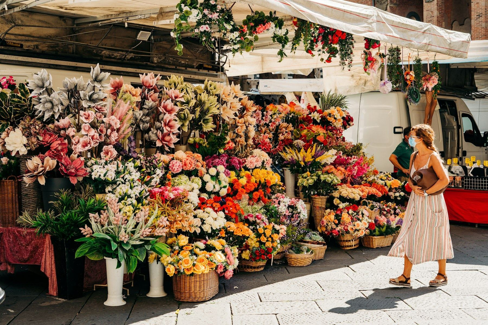
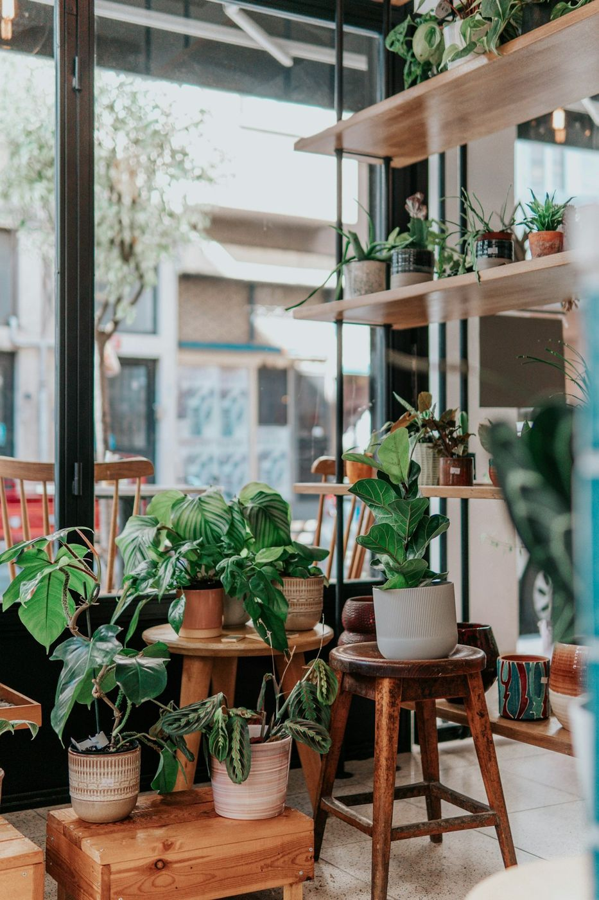
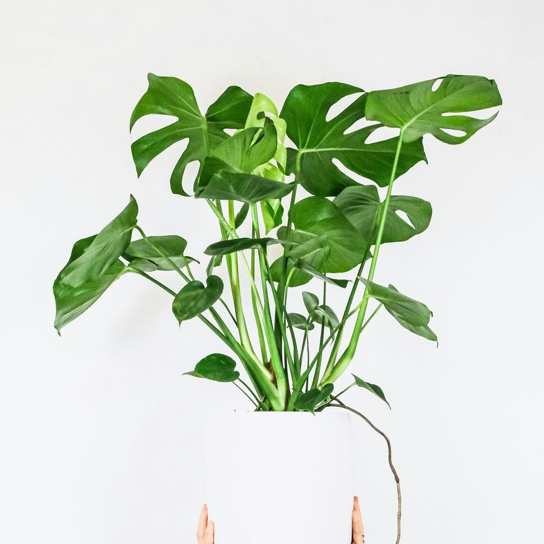
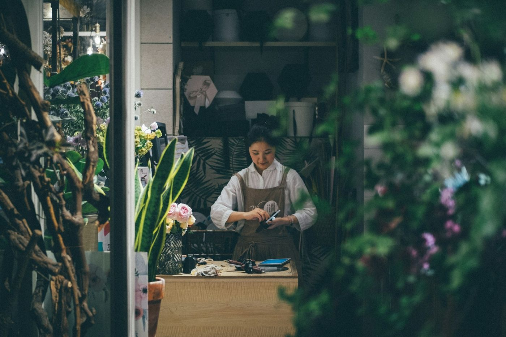
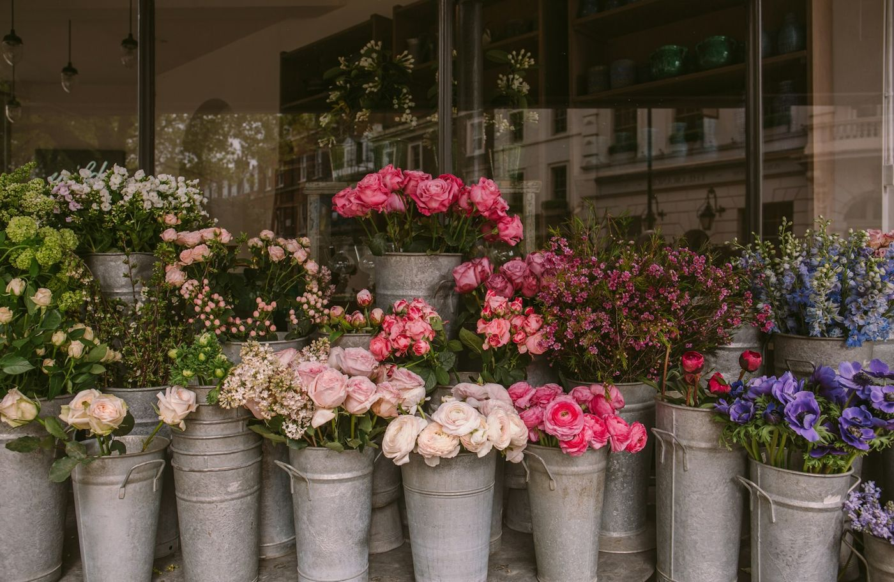

Fiorista a Milano
Fiori freschi ogni mattina, mazzi fatti al momento
Fiorista a Milano: mazzi del giorno, piante, composizioni per eventi e consegna a domicilio in città.

Cosa trovi
Ti piace qualcosa? Tocca «Chiedi» e ci scrivi su WhatsApp.
-
Mazzi del giorno
Fiori di stagione composti al momento, anche con un biglietto scritto a mano.
da 15 €Chiedi -

Piante da interno
Piante verdi e fiorite, con i consigli per farle durare.
da 12 €Chiedi -
Bouquet sposa
Prova del bouquet e fiori coordinati per testimoni e chiesa.
su preventivoChiedi
Composizioni per eventi
Matrimoni, battesimi, inaugurazioni: veniamo a vedere il posto e ti facciamo una proposta.
su preventivoConsegna a domicilio
A Milano consegniamo in giornata se ordini entro le 12.
da 5 €Fiori per uffici
Un mazzo fresco ogni settimana per la tua reception o il tuo negozio.
da 25 € a settimana

Fiori di Lu è una bottega piccola, piena di colori
Ogni mattina scegliamo i fiori al mercato e prepariamo i mazzi davanti a te, ascoltando per chi sono e cosa vuoi dire.
- Fiori scelti ogni mattina
- Mazzi fatti al momento
- Consegna in città

Orari e indirizzo
- Lunedì – Sabato
- 8:30 – 13:00 e 16:30 – 20:00
- Domenica
- 8:30 – 13:00